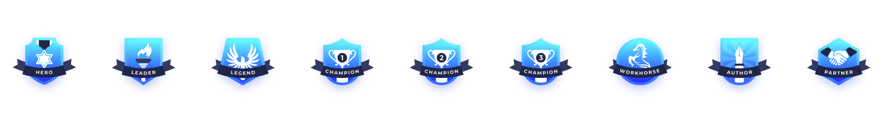
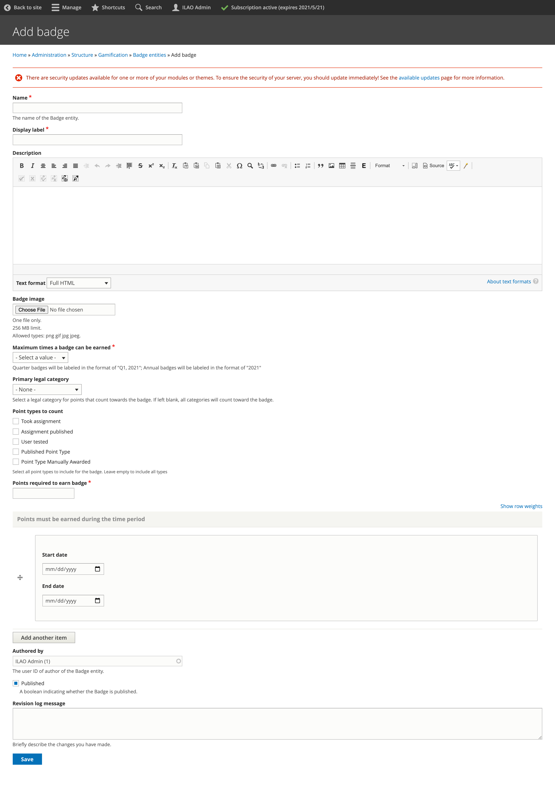
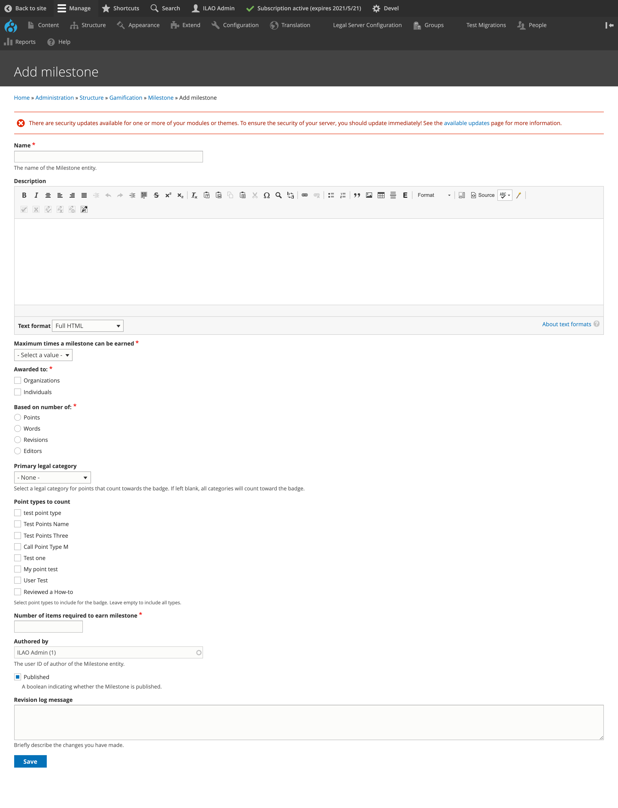
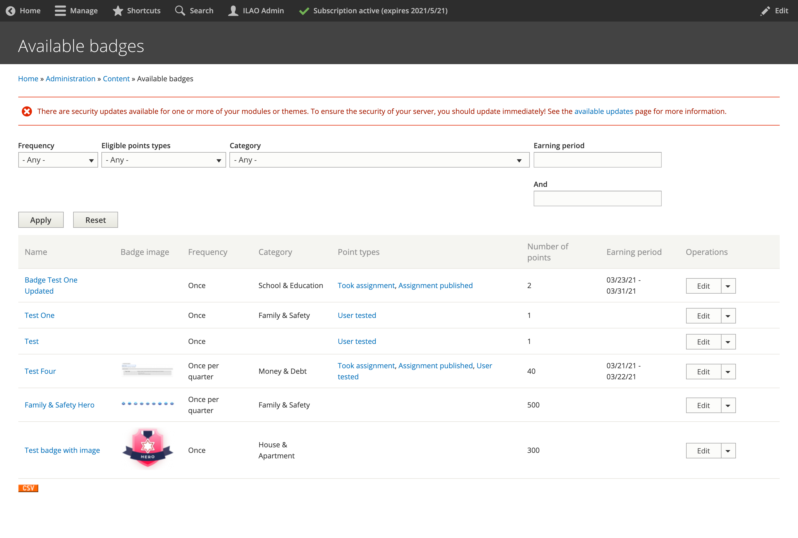
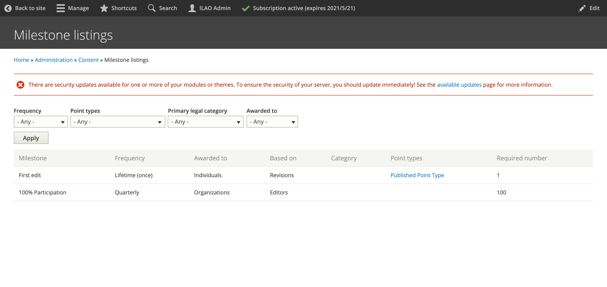

Gamification: Badges and Milestones
ILAO awards badges to users based on activity.
There are 6 badge icons for each legal category:
Hero
Leader
Legend
Workhorse
Author
Partner
There are also 3 “Champion” badges per category (1st, 2nd, 3rd). There is also a star image for milestone awards.
Badge icons can be found on the Google drive.
Badges vs Milestones
Badges
Can only be awarded to individuals
Are awarded based on points (but points can be awarded per word or at a flat rate)
Have an associated badge image
May be earned:
one time
once per month
once a quarter
once a year
Note
The badge can further be limited to a specific time period. For example, a badge that can be awarded once a quarter but limited to a time period of July 1, 2021 to August 15, 2021 can not be earned between August 16, 2021 and September 30, 2021 despite the badge being available once a quarter.
Examples:
Family & Safety Hero
Crime & Traffic Hero
Workhorse
Family & Safety Workhorse
Pro Bono Month Champion
The author and partner badges are reserved for specialty awards rather than general editorial work. The author badge might be awarded:
with a label of “Contributor” the first time a user drafts an article from scratch and can only be earned once.
with a label of “Scribe” the first time a user drafts 5 articles from scratch and can only be earned once.
with a label of “Wordsmith” for every 10 articles a user drafts and can be earned as often as necessary.
The partner badge might be awarded: * with a category of “UX Tester” the first time a user completes an observeration test * with a category of “QA Partner” when a user tests an Easy Form
Milestones
Can be awarded to individuals or to organizations
Can be tied to words, articles, points, or editors (for organizations)
Appear only in the milestones block
Have a star icon (no badge)
Are awarded:
once, when first earned
at the end of the quarter
at the end of the year
Examples of milestones might be:
1st article edited
100 articles edited
250 articles edited
5,000 words edited
10,000 words edited
100% LCV contribution (awarded to an organization for the quarter/year)
Champion badges
At the end of each quarter, champion badges will be awarded to the user with the highest number of points in each category, 1st, 2nd, and 3rd place. These badges would be named for the period awarded: School & Education, Q2 2021.
There is also a global champion badge, awarded based on the total number of points during the quarter.
At the end of the calendar year, annual champion badges are also awarded.
Defining Badges
The badges can be configured in the CMS.
Badges should have:
A name. This is the administrative name for the badge (for admin reports).
A display label. This is what appears to users beneath the badge, minus the date range.
A description. This will appear on the “Learn more about badges” page.
Badge image. This is the image to use.
The maximum number of times a badge can be earned:
Once. A user can earn a badge one time.
Once per quarter. The user can earn the badge once a quarter maximum. Quarter badges are postfixed with “Q2, 2021”.
Once per year. The user can earn the badge once a year maximum. Annual badges are postfixed with the 4 digit year. * No limit. As soon as the user hits the number of points required, they earn the badge.
Example: User has: 210 points on Jan 28, 305 points on Feb 28, 500 points on April 30
Badge Type |
User Awarded |
|---|---|
Once; 200 points |
User awarded the badge on Jan 28 |
Once per qtr; 100 points |
User awarded the badge on Jan 28 and April 30 |
Once per qtr; 250 points |
User awarded the badge on February 28 (points reset Apr 1; user only has 195 countable points for the quarter |
Once per year 300 points |
User awarded the badge on February 28 |
Which content categories count towards the badge. A badge could be limited points earned from tasks associated with family & safety content or not limited for example. The category used is either:
the primary legal category associated with a node
the primary legal category indicated when awarding manual credit.
the point types that should be counted for a badge award. Leave blank for all point types.
Note
If left empty, new point types will be included automatically. When populated, any new point types will need to be manually added.
a number of point required to earn a badge.
the dates when points can be earned for a specific badge. If left empty, all dates can be used.
Note
For example, if a badge is limited to October 1, 2021 through October 31, 2021, points earned outside of that range will not be counted regardless of the badge award frequency. However, if the frequency is no limit, the user can earn the badge multiple times in October.
Defining Milestones
Milestones are added under Structure/Gamification/Milestone.
Milestones should have:
A name. This is what displays in the Milestones this quarter panel
A description. This will be displayed on the Learn more about our badges/milestones page
Maximum number of times a milestone can be earned. This has options of:
Lifetime (once)
Quarterly
Annually
Who the milestone applies to. Options are:
Organizations
Individuals
Both
Base award on:
Points
Words. When words is selected, the milestone will be calculated using the number of words in the content associated with the point type(s).
Revisions. When revisions is selected, the milestone will be calculated using the number of point types associated with the user/organization. For example, if a user has earned points under “Published content” 5 times, 5 revisions will be counted.
Editors. When editors is selected, the milestone will be calculated by the number of unique users associated with point types. Editor totals can be tracked against:
Percentage of legal content volunteers in an organization. For example, if Organization A has 5 editors and the milestone is for 75% contribution, 4 editors must make an edit for the organization to earn the milestone. A legal content volunteer is defined as a user who has the subject matter expert role.
Percentage of staff in an organization. For example, if Organization A has 20 staff and the milestone is for 75% contribution, 15 users must make an edit for the organization to earn the milestone.
Number. Number of editors with a revision.
Legal category for countable points. Leave as none to apply to all categories.
Point types to include when counting points.
Number of items required to earn milestone. For example, a milestone for first edit that can only be won once would have a revision count of 1 to award. A milestone of 10,000 words edited awarded once a year would have a words basis with an item count of 10,000.
A revision message may be added to document what was added or changed.
Listings
Badges and milestones are custom entities (not content types) so they do not appear in the Find content report.
The list of badges contains all badges defined in the system and can be exported to CSV.
The list of milestones shows all of the milestones in the system.
